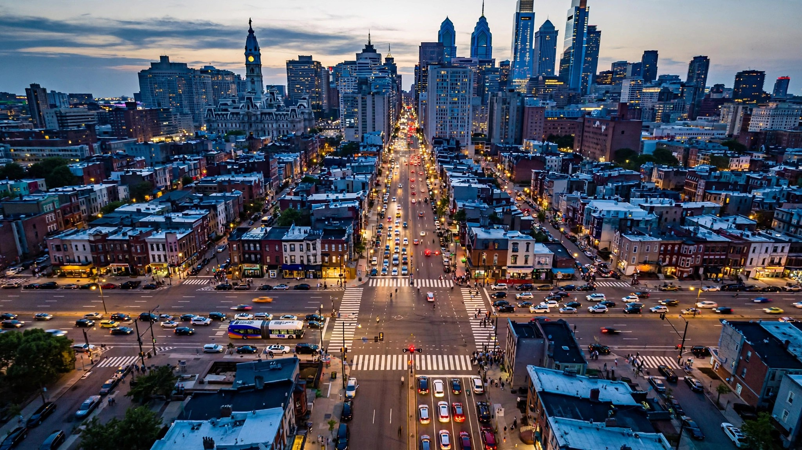

Philadelphia Kills Drivers at 3x New York’s Rate. Its Fix Costs Less Than a Single Wrongful Death Verdict.

Philadelphia just earned a distinction nobody puts on a tourism brochure. A city controller report released Thursday, citing NHTSA’s 2024 data, found that Philadelphia’s traffic fatality rate of 9.04 deaths per 100,000 residents is the highest among the five largest U.S. cities — and 3.2 times New York City’s rate of 2.86.[1]
Chicago sits second at 7.15. Then Washington, D.C., at 4.73 and Boston at 3.64. Philadelphia isn’t just losing this comparison; it occupies a different tier entirely, closer to the Sunbelt sprawl cities it architecturally resembles than the Northeastern density cluster it technically belongs to.
What makes the number worse is that it went UP. Philadelphia posted 8.64 per 100,000 in 2023, which means the rate climbed 4.6 percent in a year when the national trend went the other direction. NHTSA reported a 6.7 percent decline in nationwide traffic deaths for 2025 and a near-record Q1 2026 fatality rate of 0.99 per 100 million vehicle miles traveled, the second-lowest first quarter in American history.[2][3]
Controller Christy Brady credited Vision Zero, the city’s decade-old program to eliminate traffic deaths, with bringing the rate down from above 10 per 100,000 during the pandemic-era spike in 2020. The trajectory is real, but the pace grinds: Philadelphia’s fiscal year 2027 budget allocates $30 million for Vision Zero over the next six years, which works out to five million a year.
Run the arithmetic on that figure and something interesting emerges. Philadelphia’s population is roughly 1.6 million, so at 9.04 per 100,000, the city logs approximately 145 traffic deaths per year. If Vision Zero’s $5 million annual spend achieved even a 10 percent reduction, it would save roughly 15 lives for $333,000 per life saved. The U.S. Department of Transportation’s current value of a statistical life sits at $12.5 million.[4] That’s a 37-to-1 benefit-to-cost ratio before you count the ambulance rides, the disability claims, the lost tax revenue, or the wrongful death verdicts that routinely clear seven figures in Pennsylvania courtrooms.
For context, the national AEB mandate that NHTSA finalized in 2024 carries a benefit-to-cost ratio of roughly 4:1 and won’t fully phase in until 2029.[5] Road geometry changes — narrower lanes, raised crosswalks, protected bike infrastructure — deliver returns that crush the per-dollar economics of vehicle-side safety technology, partly because they cover every vehicle on the road regardless of make, model, or model year, and partly because they last decades.
Brady flagged local control over speed limits as the city’s top legislative priority, noting that Pennsylvania’s statewide speed standards weren’t designed for a city where 35 percent of households don’t own a car and arterial roads built for 1950s suburban throughput now carry mixed pedestrian, cyclist, and transit traffic. She’s not wrong. Philadelphia’s speed limit authority is constrained by Title 75 of the Pennsylvania Vehicle Code in ways that NYC, which gained municipal authority over its own limits through 2014 state legislation, is not.
New York’s rate of 2.86 isn’t magic; it’s money, authority, and geometry. NYC has spent an estimated $1.7 billion on Vision Zero since 2014 and reduced its traffic fatality rate by roughly 25 percent. Per-VMT exposure is lower because New Yorkers walk and ride transit at rates Philadelphia can’t match without a subway system that covers more than two lines. But the gap is mostly engineering: 400 leading pedestrian intervals installed citywide, 120 miles of protected bike lanes, and automated speed enforcement that Philadelphia lacks the state authority to deploy.
None of this is a vehicle problem in the FARS sense. It’s infrastructure wearing a vehicle problem’s clothes. Same Camrys, Accords, and Altimas killing people on North Broad Street and Roosevelt Boulevard as in every other American city. What changed is that New York rebuilt the road underneath them and Philadelphia mostly didn’t.
The cheapest intervention in traffic safety isn’t a better car. It’s a narrower lane.
Sources & References
- Philadelphia City Controller’s Office via Fox 29 Philadelphia, “Philadelphia traffic fatality rate highest among major U.S. cities, new report reveals,” July 24, 2026. Citing NHTSA 2024 data. fox29.com
- NHTSA, “Traffic Deaths Declined Significantly in 2025,” press release, 2026. 36,640 deaths, 6.7% decrease from 2024. aashtojournal.org
- NHTSA, “Early Estimates Jan–March 2026,” 2026. Q1 2026 fatality rate 0.99 per 100M VMT, 7,770 deaths, down 4.3% YoY. nhtsa.gov
- U.S. Department of Transportation, “Departmental Guidance on Valuation of a Statistical Life in Economic Analysis,” 2024 update. VSL = $12.5 million (2022 dollars). transportation.gov
- NHTSA, FMVSS No. 127 — Automatic Emergency Braking, final rule, 2024. Phase-in: September 2027–2029. nhtsa.gov
Methodology note: Per-capita fatality rates and per-VMT rates measure different things. Philadelphia’s 9.04 per 100K population is a per-capita figure; the national 0.99 per 100M VMT is an exposure-adjusted figure. Cities with higher VMT per capita will tend to have higher per-capita death rates independent of road safety quality. The cost-per-life-saved calculation assumes a linear 10% reduction from Vision Zero’s annual $5M spend, which oversimplifies the relationship between spending and outcomes. The $1.7B NYC Vision Zero figure is a cumulative estimate from multiple budget documents and may include capital projects with mixed safety/mobility goals. FARS vehicle-level data (2014–2023) is used for national vehicle comparisons only; city-level FARS breakdowns are not available in our dataset. See methodology for broader caveats.